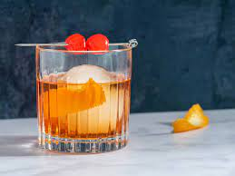

Old Fashion

Description
One of the great classic bourbon cocktails
The Old Fashioned was invented in Louisville, KY. Extremly simple,
extremly satisfying
Ingredients
- 2 tsp sugar syrup or 1 tsp granulated sugar
- 1-2 dashes Angostura bitters
- 60ml Scotch whisky or bourbon
- orange slice
- soda water (optional)
- maraschino cherry (optional)